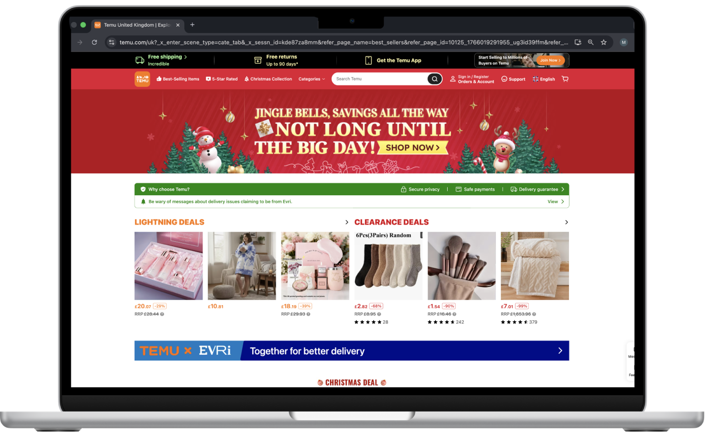

Temu is an e-commerce platform and its low-cost, free and fast delivery options are appealing to users amid rising prices — which is obvious by the fact that the app had 27 million downloads worldwide in October 2025.
The Consumer-to-Manufacturer (C2M) model adopted by Temu leads to a very efficient supply chain, driven by specific customer requests and demands.
Check out the heuristic evaluation I conducted for Temu's website below:
Temu effectively uses gamification and consumer psychology to create an engaging and highly interactive shopping experience. The platform succeeds in keeping users active and exposed to a wide range of products throughout the journey.
However, across key stages of the user flow for a new customer making a purchase, recurring issues with consistency, user control, and information hierarchy increase cognitive load and reduce confidence during decision-making. While the necessary information is present, cluttered layouts, shifting interface elements, and limited recovery options make the buying experience feel effortful rather than seamless, particularly for new users.
Reflections
- Use of consumer psychology and intersection with UI. Temu makes extensive use of gamification and consumer psychology to keep users engaged throughout the purchase journey. While this approach is effective at driving interaction, the interface does not sufficiently support it with strong UI principles, particularly those that reduce cognitive load. As a result, engagement is often achieved at the expense of clarity.
- Consistency and user control play a key role in creating reliability. Despite offering strong value for money, the interface feels cluttered and unpredictable. Inconsistent visuals and limited user control make it harder to prioritise relevant information, which ultimately weakens trust at key decision points in the journey.
Learnings
- Understanding the stages and evaluation flows. Breaking down usability by discovery, sign up, browsing, selection and checkout helped me identify gaps through a structured lens. This approach made it easier to connect individual UI problems to broader patterns across the journey.
- Balancing the strengths in UI with opportunities for improvement. This evaluation reinforced the importance of recognising what already works well. Temu's interactivity and engagement mechanisms are effective, and understanding these strengths provides a stronger foundation for proposing meaningful improvements rather than redesigning in isolation.